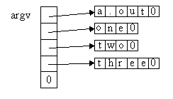

| |
We have seen that functions may take arguments -- they can be parameterized. Similarly, an entire program can be passed arguments. This happens frequently, as many programs take arguments; for example:
cp a.cc b.cc
aCC hello.cc
ls -l a.out
The argument list follows the command (program) name and it is up to the program to make appropriate use of it. Without arguments, each program would have to explicitly include input statements to wait for suitable input. This would make them much less convenient to use, especially in the Unix environment.
In C++, the main function is allowed to be written with
parameters omitted. However, if information from the command line
is to be used inside the program, then the main function is
coded as follows:
int main( int argc, char* argv[] )
where argv is an array of C-style strings.
(Technically, argv is an array of char* pointers, but saying an
array of C-style strings will get us by for now.)
argc gives the size of the array.
The argv array is used to store the command name
and arguments given on the command line that invoked the program.
Given the following at the command line:
a.out one two three
four items have been typed.
The first item is the command or program name (that is, the name of the
program's executable file) and the rest are arguments to the program.
In this example, when the main function is executed,
argc has the value 4, corresponding with the
number of items on the command line.
The array argv has extent (number of elements) 'argc + 1', the final element being set to zero (null). This marks the end of the array in much the same way that null marks the end of a string. The other elements are:
:
The following program displays the arguments typed on the command line (including the program name).
#include <iostream>
using namespace std;
int main(int argc, char* argv[])
{
for (int i=0; i < argc; i++)
{
cout << argv[i] << " " ;
}
cout << endl ;
return 0 ;
}
Note that as each argv element points to a string,
it can be displayed directly using:
cout << argv[i];
as the output stream always treats char* values
as if they were C-style strings.
The following example implements a simple file copy program (like the Unix 'cp'). argv and argc are used to read the names of the files to be copied from the command line. The program would be used like 'cp':
copy file1 file2
Notice that the error messages are output to the stream called cerr. This is like cout but is typically used for error messages. If standard output is redirected, output to cerr will still appear on the screen.
1 #include <iostream>
2 #include <fstream> // for ifstream, ofstream
3 using namespace std;
4
5 int main(int argc, char* argv[])
6 {
7 ifstream source; // Input stream
8 ofstream dest; // Output stream
9 char ch; // character read to be output
10
11 if (argc != 3) // test number of arguments
12 {
13 cerr << "Error use: copy file1 file2\n";
14 return -1; // terminate program
15 }
16
17 // Try to open source file
18 source.open(argv[1]);
19 if ( !source )
20 {
21 cerr << "Cannot open source file " << argv[1]
22 << " for input\n";
23 return -1; // terminate program
24 }
25
26 dest.open(argv[2]); // dest file will be created if not found
27 // or overwritten if it already exists
28 if ( !dest )
29 {
30 cerr << "Cannot open destination file " << argv[2]
31 << " for output\n";
32 return -1; // terminate program
33 }
34
35 // Copy file, one character at a time
36 source.get(ch);
37 while (source && dest)
38 {
39 dest.put(ch);
40 source.get(ch);
41 }
42
43 source.close();
44 dest.close();
45 return 0;
46 }
This example shows the typical structure of programs that use argc and argv. First a test is done on argc to see if the actual number of arguments matches the number expected. Then each argument is obtained from argv and used for its appropriate purpose (e.g., to specify a file name). If any argument is invalid, an error message is displayed and the program is terminated. If the program runs correctly the main function will return zero, the convention used by Unix to indicate that a program terminated without error. Otherwise the program returns -1, indicating that the program ran into problems.
Finally, notice the loop, lines 36 through 41 above, that does the copying. The ifstream member function get() will read in the next character from the input stream and store it into the variable ch. The function get() does not ignore whitespace and thus will always read the next character regardless of what it is. That includes newlines ('\n') characters. The ofstream function put() will write any character to the output stream. When the end of the source file is reached, the file handle source will return false. Similarly, if the program is unable to write to the destination file, the file handle dest will return false.